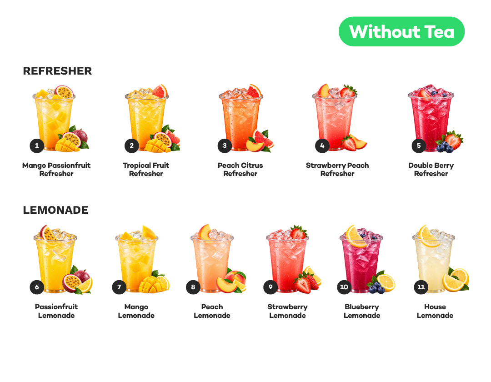

| ||||||
SIPOD MENU UPGRADE IS READYUpgrade Your Beverage Menu. | ||||||
EXPRESS EDITIONA truly one-tap menu11 Refreshers and Lemonades with no tea base and no caffeine. Click the menu to view the full image. | ||||||
 | ||||||
| ||||||
OPTIONAL SOJU COLLECTIONOptional Add-On: Six Soju DrinksRestaurants with a Beer and Wine License can choose to add Soju drinks to the new menu and offer guests more choices.
| ||||||
FREE MARKETING MATERIALSFree Materials to Help New Drinks SellSet the price of each drink for your local market. Once you confirm the new menu, SiPod will provide matching digital and print-ready marketing materials at no charge to help showcase the new drinks and encourage orders. | ||||||
POLICY UPDATE300-Cup Protection Ends November 24Starting November 24, SiPod will end the 300-cup protection and resume regular monthly billing. If you would like to cancel, please contact us before this date. | ||||||
| Questions? Contact SiPod: 888-606-6888 or bd@sipod.com SiPod Group Inc. · 17 Allen Street, New York, NY 10002 www.sipod.com |